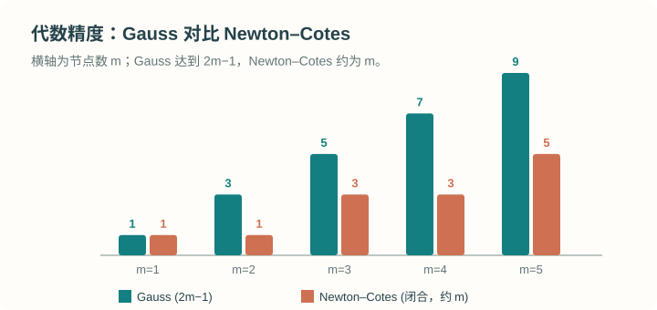
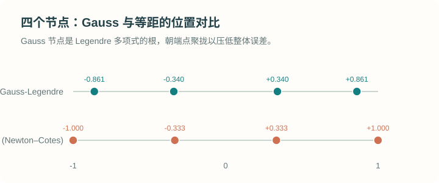

CHAPTER 12 · NUMERICAL ANALYSIS
Gauss 求积：把节点也当作未知量
上一章的复合 Simpson、Romberg 都在等距节点上做文章。如果我们连节点的位置都可以自由选择，同样次数的函数求值能换来多高的代数精度？答案是 2m−1（m 为节点数），而且这个上界可由正交多项式的零点达到。
01 · 等距节点的精度上限
先数自由度。插值型求积公式 ∑ᵢwᵢf(xᵢ) 对低于某个次数的多项式精确，等价于权重满足一组矩条件：对 k=0,1,2,… 都要求 ∑ᵢwᵢ xᵢᵏ = ∫xᵏw(x)dx。有多少个未知量，就至多能精确满足多少个矩条件。
等距 Newton–Cotes 把节点固定，只剩 m 个权重未知，所以只能精确到 m−1 次；当 m 为奇数时，对称性额外再精确一次到 m 次。梯形（m=2）1 次、Simpson（m=3）3 次，都落在这个上限内。
如果节点也可移动，就有 2m 个未知量（m 个节点加 m 个权重），理论上可满足 2m 个矩条件，即精确到 2m−1 次。这不是一种启发式，而是可以证明的：m 个节点的插值型求积，代数精度不可能超过 2m−1。

m 个节点，Gauss 达到 2m−1 次代数精度，而等距 Newton–Cotes 只到约 m 次；差距随节点数增大。02 · Gauss 条件：节点取正交多项式零点
带权函数的一般求积写作
令节点多项式 ω(x)=∏ᵢ(x−xᵢ)。要让精度达到 2m−1，关键条件是：ω 与所有次数小于 m 的多项式正交，即对任意 deg q<m 有
这恰好说明 ω 就是关于权函数 w 的 m 次正交多项式（相差常数倍），于是 Gauss 节点就是该正交多项式的零点。为什么这能给出 2m−1？对任意次数不超过 2m−1 的 f，用 ω 除：f=ωq+r，其中 deg q≤m−1、deg r≤m−1。积分里 ∫ωq w dx 由 (12.2) 为零，剩下的 r 是低次多项式，被插值型公式精确积分——两步合起来就是 2m−1 次精确。
一般区间上的 Gauss–Legendre 通过线性变换归约到标准区间 [−1,1]：

P₄ 的零点，朝区间两端聚拢；等距节点则均匀分布。端点附近聚簇是为了压低整体加权误差。03 · 加权公式与正交多项式族
把权函数 w 选得与问题匹配，就能把难以逼近的部分“吸”进权函数，剩下的只用一个低次多项式很好地逼近。常见的四族对比如下。
| 名称 | 区间 | 权函数 w(x) | 正交多项式 | 典型用途 |
|---|---|---|---|---|
| Gauss–Legendre | [−1,1] | 1 | Legendre Pₘ | 一般数值积分 |
| Gauss–Chebyshev | [−1,1] | 1/√(1−x²) | Chebyshev Tₘ | 端点奇异、1/√ 型权重 |
| Gauss–Laguerre | [0,∞) | e^{−x} | Laguerre Lₘ | 半无限区间、含指数衰减 |
| Gauss–Hermite | (−∞,∞) | e^{−x²} | Hermite Hₘ | 概率、量子力学高斯权重 |
标准区间 [−1,1] 上的 Gauss–Legendre 节点与权重是对称的；下表为前几阶（双精度数值，用于教学对照）：
| m | 节点 xᵢ | 权重 wᵢ | 代数精度 |
|---|---|---|---|
| 2 | ±0.577 350 | 1, 1 | 3 |
| 3 | 0, ±0.774 597 | 0.888 889, 0.555 556 | 5 |
| 4 | ±0.339 981, ±0.861 136 | 0.652 145, 0.347 855 | 7 |
04 · 实验：少数节点的惊人精度
用标准区间上的节点与权重直接算。下面的实验同时验证两件事：一是 m=5 的 Gauss–Legendre 用 5 次函数求值就能把 ∫₀¹eˣdx 算到 10⁻¹² 量级；二是代数精度确实是 2m−1（m=3 能精确积分 x⁴，但对 x⁶ 就不准了）。
import math
# [-1,1] 上的 Gauss-Legendre 节点与权重
XW = {
2: ([-0.5773502691896257, 0.5773502691896257], [1.0, 1.0]),
3: ([-0.7745966692414834, 0.0, 0.7745966692414834],
[0.5555555555555556, 0.8888888888888888, 0.5555555555555556]),
5: ([-0.9061798459386640, -0.5384693101056831, 0.0,
0.5384693101056831, 0.9061798459386640],
[0.2369268850561891, 0.4786286704993665, 0.5688888888888889,
0.4786286704993665, 0.2369268850561891]),
}
def gauss_legendre(f, a, b, m):
xs, ws = XW[m]
half, mid = (b - a) / 2, (a + b) / 2
return half * sum(w * f(half * x + mid) for x, w in zip(xs, ws))
exact = math.e - 1
e2 = abs(gauss_legendre(math.exp, 0, 1, 2) - exact)
e5 = abs(gauss_legendre(math.exp, 0, 1, 5) - exact)
assert e5 < 1e-11 and e5 < e2 # 节点越多越准
assert abs(gauss_legendre(lambda x: x**4, -1, 1, 3) - 2/5) < 1e-14 # 2m-1 = 5 覆盖 4 次
assert abs(gauss_legendre(lambda x: x**6, -1, 1, 3) - 2/7) > 1e-2 # 6 次超出 5，误差出现
print(e2, e5)作为对照：复合梯形误差约 0.23h²，要把 ∫₀¹eˣdx 做到 10⁻¹²，粗略估计需要约 5×10⁵ 次函数求值（由 O(h²) 估计，教学示意），而 Gauss 只要 5 次。
05 · 失效边界：不可嵌套与权函数可积
节点不可嵌套。从 m 节点增加到 m+1，新节点位置完全不同，旧的函数值全部作废。而复合梯形可以通过 T₂ₙ=Tₙ/2+h∑f复用旧节点（Romberg 正是靠这一点递推）。当函数求值便宜、需要灵活控制精度时，复合梯形 + 外推可能更实用。
权函数必须可积。(12.1) 的前提是 ∫|w(x)|dx 有限、且矩 ∫xᵏw dx 存在。若 w 使矩阵矩发散（如 1/x² 在 0 附近），Gauss 条件根本定义不了。Chebyshev 权虽在端点无定义，但 ∫₋₁¹(1−x²)^{−1/2}dx=π 有限，因此合法；代价是只能在 (−1,1) 内部取点。
高精度依赖光滑性。Gauss 的误差余项与 f^{(2m)} 相关。若 f 不光滑、导数无界，高阶优势会退化到与低阶方法相当，此时应先変量替换或用自适应策略。
原始资料与延伸阅读
本章将文献中的数学结论与本文独立构造的数值示例严格区分；表内节点与权重为双精度数值，图示为教学演示。
- NIST DLMF §3.5 · Quadrature：Gauss 求积、正交多项式零点与代数精度上界。
- SciPy · scipy.special.roots_legendre：Gauss–Legendre 节点与权重的可靠数值计算。
- SciPy · Orthogonal polynomials：Laguerre、Hermite、Chebyshev 等族及对应求积节点。